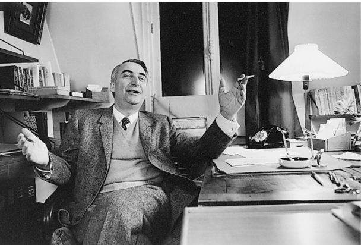

谁是罗兰·巴特？这个问题有现成的答案：一位法国结构主义者。虽然巴特的崇拜者可能会坚持认为，结构主义只是巴特多变的职业生涯中的一个时刻，并且当时他并没有完全露出自己的真面目，但这显然是他最为重要的时刻：结构主义是他的影响力的来源，是他的理论设想和观点所取得的成果，同时也是他未来发展的跳板。在结构主义变成一种权威之后，巴特悠然地与它保持着距离，在其他人看来，他变成了一个“后结构主义者”。但这种说法不清不楚，因为要想创造出“后结构主义”，人们就必须把结构主义做狭隘的歪曲。事实上，所谓的“后结构主义”有很多内容在结构主义作品中已经明显表露了出来。
1967年，在为《泰晤士报·文学增刊》所写的一篇文章中，巴特将结构主义界定为用来分析文化产品的一种方法，其根源在于语言学方法（《语言絮谈》，第13/5页）。在《文艺批评文集》中，他解释道，他“进行了一系列结构主义分析，目的在于界定一些非文字性的语言”（第155/151——152页）。结构主义把现象看作是潜在的规则和区分体系的产物，并且从语言学中借用了两条基本原则：（1）实施意指行为的实体并无本质，而是被内部和外部的各种关系网络所界定；（2）对意指现象做出解释就是要描述使它们成为可能的体系。结构性的解释并不追溯历史渊源，也不寻找原因，而是通过将特定的客体和行为与它们所处的体系联系起来，来探讨它们的结构和意指效果。

图10书桌旁的巴特。
在20世纪60年代，似乎没有必要来区分结构主义和符号研究。巴特在《文艺批评文集》中界定了“结构主义行为”，宣称“以严肃的态度向意指行为命名求助”是结构主义的标志，并建议感兴趣的读者“观察哪些人使用能指 和所指，历时性 和共 时性 ”（第213——214/214页）。不过，最终符号研究（或者说，符号学）被看作一种研究领域——对于各种符号体系的研究——而“结构主义”指的是20世纪60年代法国思想家提出的一些声明和步骤，它试图描述各种人类行为背后潜藏的结构。巴特写道：“所有结构主义行为的目标，无论是反思性还是诗性的目标，都是要‘重构’一个客体，从而揭示让它得以运作的规则。”他得出结论，结构主义的“新意在于提出一种思想模式（或者说，一种‘诗学’），不再只是将完成后的意义分配给它所发现的客体，而是要知道意义如何成为可能，要付出何种代价，通过何种方式”（第218/218页）。他督促文学专业的学生——
第259——260/256——257页
为了理解最有趣、最具创新精神的文学作品如何运作，人们必须重构被这些作品戏仿、抵制和扰乱的规范体系。
我们可以区分文学的结构主义研究的四个方面。首先，结构主义研究试图用语言学术语来描述文学语言，从而抓住文学结构的特点。巴特频繁使用语言学类别来讨论文学话语。他对于埃米尔·本维尼斯特提出的一对区分特别感兴趣，本维尼斯特提议把指涉语境的语言形式（比如，第一和第二人称代词，诸如这里、那里、昨天 之类的表述，以及部分动词时态）与非指涉的语言形式区分开来。这一区分帮助巴特对叙事技巧的某些方面进行分析，但他对于语言学采取灵活借用的办法，和部分结构主义者不同，他并不尝试系统性的语言学描述。 [13]
第二个主要的理论设想是发展一种“叙事学”，辨认叙事的组成部分及其在不同的叙事技巧中可能采取的组合办法。法国结构主义者的研究方法主要基于俄国形式主义者弗拉迪米尔·帕洛普的研究，他提出的民间故事“语法”描述了这些故事的基本母题及其可能出现的结合。法国结构主义者尤其关注情节，想了解情节的基本要素是什么，如何结合，基本的情节结构是什么，以及如何产生完成和未完成的效果。巴特以此为主题，为《沟通》杂志的一期特刊写了一份长篇导论（《叙事的结构分析导论》，收录于《意象、音乐、文本》之中）。在后来的作品中，他强调情节结构在确保作品可理解性方面的作用，同时也关注打乱叙事预期可能产生的效果。他写道，不可能“在没有涉及由各种基本单元和规则所组成的潜在体系的情况下”，产生一段叙事（《意象、音乐、文本》，第81页）。只有就某种叙事建构与常规的叙事预期之间的关系而言，前者才会具有过度的或者欺骗性的效果。
除了对叙事进行系统性研究之外，结构主义者还试图说明，文学意义如何取决于某种文化之前的话语所生产的文化代码。巴特的《S/Z》一书为这个设想做出了最重要的贡献，稍后我将对此进行讨论。最后，结构主义提倡分析读者在意义生产中所起到的作用以及文学作品如何通过抵抗或顺从读者预期来取得相应的效果。巴特在分析罗伯——格里耶的作品时引入了上述思路，在后来的作品中，他从两个方面进行了相关研究。首先，他声称词语和作品只有与话语惯例和阅读习惯产生联系才有意义，要想理解文学结构就必须研究这些惯例和习惯。因此，读者作为惯例的存储者和使用者就变得十分重要。诗学理论关注作品的可理解性，读者在其中不是被看作个人或主体性，而是一种作用：读者是让阅读成为可能的代码的化身。巴特写道：“那个接近文本的‘我’，本身就是其他文本和代码的复数形式，这些代码数量无穷，或者更确切地说，这些代码已经失落（它们的源头已经失落）……主体性通常被认为是一种充分状态，有了它我才能实现文本，但事实上这种虚假的充分状态只是构成我的各种代码所留下的痕迹，因此我的主体性最终具有各种模式化形象的通用特征”（《S/Z》，第16——17/10页）。读者同样出现在第二种论述中：最有趣或最有价值的文学是那些能够最大程度地让读者得到锻炼的作品，它们对于阅读的结构化行为发起挑战，让人们关注到这些行为。“在文学作品中（在作为作品的文学中），最重要的是让读者不再只是消费者，而是文本的生产者”（第10/4页）。在结构主义的大力倡导下，读者在文学批评中成为核心人物。如果正如巴特所说，“读者的诞生必须以作者的死亡为代价”，作者不再被视为意义的根源和仲裁者，那么这正是他愿意付出的代价（《语言絮谈》，第69/55页）。
结构主义试图弄明白我们如何理解一个文本，这一尝试使得人们不再把文学看作表征或交流，而是由文学秩序和文化的话语代码所生产的一系列形式。结构主义分析并不打算发现潜藏的意义：巴特写道，一部作品就像一个洋葱，“多个层次（或多重表面，或多个体系）叠合在一起，它的体内没有心脏，没有内核，没有秘密，也没有不可化约的原则，只有把它自身包裹起来的无穷的表层——这些表层包裹的不是别的，就是自身的集合”（《语言絮谈》，第159/99页）。结构分析并不对文本进行“解释”，而是从文本内容开始，进而分析相关代码的运作，“辨认它们的术语，勾勒它们的次序，同时也假设其他代码，并通过最初研究的代码来对后者进行分析。” [14] 他在《作者之死》中这样写道：
《语言絮谈》，第68/53——54页
让意义之线“脱丝”的拆散行为：这就是巴特在他最具雄心和最持久的结构分析《S/Z》中所采取的模式，这部作品对巴尔扎克的中篇小说《萨拉辛》逐行进行了讨论。他把文本拆分成片段（或者按他本人的说法，拆分成“文段”），在此基础上他辨认出片段赖以运作的代码。每个代码都是积累的文化知识，它使读者可以把作品中的细节看作对于某个特定功能或序列的贡献。例如，情节代码（ 巴特常常借用希腊语来创造术语）是一系列行为模式，用来帮助读者把细节纳入情节序列之中：因为我们有某些程式化的模式，诸如“陷入爱河”、“绑架”或“承担一次危险的任务”，所以我们才能暂时地把我们所读到的细节分门别类并加以组织。阐释代码 统管神秘和悬念，用来帮助我们辨认谜团，并且对细节加以梳理以便解开这个谜团。意义代码 提供程式化的文化形象（比如，性格范式），用来帮助读者把点点滴滴的信息整合在一起，创造出人物形象。象征代码 引导读者从文本细节转到象征性阐释。巴特在《S/Z》中所说的指示代码 后来又细分为一系列文化代码，可以把它们看作是数量众多的手册，用来提供文本所需的文化信息。 [15] 巴尔扎克描写兰提伯爵时，说他“像西班牙人一样忧郁，像银行家一样无聊”，此时巴尔扎克就是在利用这些程式化的文化形象。同样，在描写萨拉辛欣赏完赞比内拉的歌唱表演，走出剧院时，他说萨拉辛的心中“充满了难以言表的忧伤”，我们的文化仿真模式告诉我们，要把这句话解读为深情投入的标记。“虽然全都源自各种书籍，这些代码（具有与资产阶级意识形态正好相反的特征，后者将文化变成自然）充当了真实的根基，同时也成为了‘生活’的根基”（《S/Z》，第211/206页）。
图11 高等实用研究院的研讨班合影，1974年。
巴特在经典文学和现代文学作品中辨认各种代码，并且点评它们在这些作品中起到的作用，他的目的不是要阐释《萨拉辛》，而是要把它作为一个互文性建构物，作为各种文化话语的产物来加以分析。他在《作者之死》中写道：“我们现在知道，文本并不是释放单一的‘神学’意义（一位作者——上帝所传递的‘讯息’）的一连串词语，而是一个多维的空间，各种写作（均非原创）在其中混合、碰撞。文本是出自无数文化源头的一系列引言”（《语言絮谈》，第67/52——53页）。巴特高度关注代码的这种引述作用，比如，他描述了可读文学所采取的反讽策略。指示代码如果一味服从原先的用法，很快就会变得枯燥乏味。
《S/Z》，第145/139页
可读的写作允许读者确定什么是最终代码（比如潜在含义，“这是反讽”）。然而，像福楼拜这样的作者，
第146/140页
巴特为了追求代码而拆解文本，这一做法使他能够对文本进行细读，同时又抗拒英美学者关于细读的看法，即认为作品的每个细节都有助于达成整体的审美统一。巴特关注作品的“多元”性质，他拒绝寻求一种整体的统一结构，而是想知道每个细节如何运作，和哪种代码发生联系，同时他也证明了自己善于发现各种代码的功能。 [16] 例如，部分描述性细节明显多此一举，它们没有与任何推动情节发展、揭示人物性格、制造悬念、产生象征意义的代码构成联系，因而这些细节的目的在于造成一种“现实感”：正是通过对意义的抵抗，它们完成了意指，“这就是真实。” [17]
《S/Z》的悖论在于，它提出的类别公然否定了经典的、可读的文学作品，巴尔扎克的作品是这类作品的典范，但是它所做的分析却将一种诱人的、强有力的复杂性赋予了巴尔扎克的一部中篇小说。《S/Z》依赖于可读与可写之间的区分，同时也依赖于经典写作（顺从我们的预期）与先锋写作（我们不知道该如何读，但在我们的实际阅读中必须自行创作）之间的区分。虽然《S/Z》宣称“可写是我们的价值”，但它却采取了一种可读的故事形式，只不过书中的分析并没有揭示一种枯燥的可预测性，而是让故事变得开放，让故事对它自身的代码以及它所处的文化中的意指机制进行敏锐且实用的反思。“《萨拉辛》展现出表征的含混性，以及符号、性和财富不受控制的流动”（第222/216页）。它宣称打破常规的先锋文学具有优越性，从而促进形成了一种智识氛围，巴尔扎克的爱好者可以在这种氛围中努力把他的作品从欣赏性的经典阅读中抢救出来，将其看作是探索自身意指过程的写作。就效果而言，巴特在这里所做的分析具有典范意义：总体上，结构主义分析基于对符合常规的作品和违反常规的作品所做出的区分，这种区分最终在最出人意料、最传统的地方发现了一种激进的文学实践——由此颠覆了文学史 的概念，同时也颠覆了巴特最初做出的区分。这是巴特的结构主义所取得的主要成就之一（或许这也是他的秘密目标）。
《S/Z》是巴特观点的全面表述 ——汇集了他关于文学的看法，同时也为不同的，甚至是矛盾的理论设想提供了共同的立足点。一方面，它显示出强烈的科学性和元语言性的驱动力，把作品拆分成各种组成部分，并且以理性和科学的态度加以命名和分类。它试图解释读者如何来理解小说，通过这一尝试，它对于《批评与真实》中所勾勒的诗学理论做出了贡献。不过另一方面，巴特和其他人都认为，他从《S/Z》开始放弃了结构主义的理论设想：巴特坚持认为，他不是把作品看作一个潜在体系的外在表现，而是要探索作品与自身的差异，探索作品难以掌握、不确定的意义，以及作品如何展现作为其根基的文化代码（第9/3页）。《S/Z》同时被视作结构主义和后结构主义的极端例子，这一现象说明，我们应该带着怀疑的眼光去看待这样的区分。我们从一开始就应该记住，结构主义者试图描述文学话语的代码，而这种尝试关系到先锋派的文学作品（如罗伯——格里耶的作品），他们要研究这些作品如何凸显、模仿和违背那些惯例。
当然，在结构主义的科学雄心和被称之为“解构主义”的后结构主义分支之间存在明显的差异， [18] 后者的特点在于说明话语如何暗中破坏它们所赖以存在的哲学前提，但这一差异很容易被人夸大。结构主义写作一再求助于语言学范式，从而把批判性思维的重点从主体转到话语，从作为意义源泉的作者转到在社会实践的话语体系内运作的规约体系。意义被看作代码和规约的效果——有时候也被看作违反规约的效果。为了描述这些规约，结构主义提出了各种科学分支——关于符号的普遍科学、关于神话的科学、关于文学的科学——这些分支被当作各种理论分析的方法依据。但在每种理论设想中，人们关注的往往是那些位于边缘的现象或者问题丛生的现象，它们有助于识别将它们排除在外的规约，而它们的力量也取决于这些规约。科学的概念或者说关于形式的普遍“语法”的概念被当作方法依据，用来分析某些作品，这些作品专注于研究不符合语法的或者偏离常态的现象，比如人类学对于污秽或禁忌的研究，以及米歇尔·福柯对于疯癫和监禁的结构主义研究。可以说，全面科学的设想在结构主义中起到的作用相当于全面质疑的做法在后结构主义的某些分支中起到的作用：无论是完全的科学还是完全的质疑，都不可能做到，但是要想对话语的运作进行令人信服的分析，这两种努力都必不可少。在《S/Z》中，巴特的研究经历了剧变，从结构主义转向后结构主义，这是巴特本人试图传递的印象，但《S/Z》所关注的问题在他各个时期的作品中持续存在。更加明显同时也更加重要的是另一种转变，那就是当巴特声称他自己是个享乐主义者时，他的形象所发生的变化。